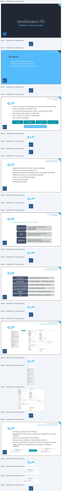
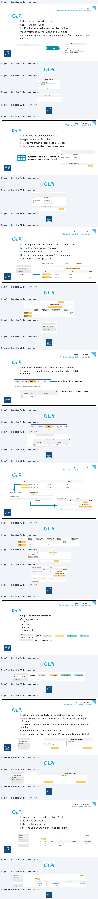
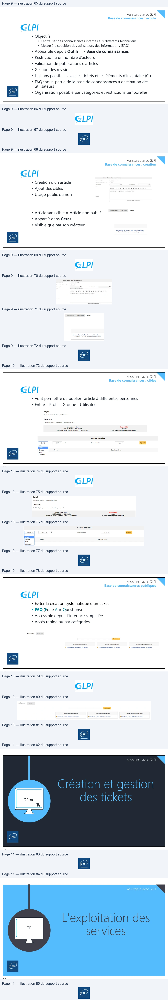

Transcription du document du Drive TSSR. La mise en forme est adaptée au Web ; les compléments IA du portail sont présentés séparément.
Module 09 – Assistance avec GLPI
1
Assistance avec GLPI
Objectifs
• Découvrir la création d’un ticket
• Découvrir le traitement d’un ticket
• Appréhender la base de connaissance
2
Assistance avec GLPI
Le ticket
• Dans le monde de l’informatique, tout fonctionne à base de ticket
• Cela va permettre de solliciter la DSI
• Un ticket passera par plusieurs statuts : cycle de vie du ticket
• Peut-être de type incident ou demande
• Doit compter un minimum d’informations
• De nombreux avantages
Répartition des
Traçabilité
Détection des
problèmes
tâches
Communication
Utilisation d’un outil de gestion de ticket
3
Assistance avec GLPI
L’assistance sous GLPI
• Système de gestion de tickets / outil de ticketing
• Conforme aux bonnes pratiques ITIL
• Recueil des sollicitations utilisateur pour une gestion centralisée
• Différents canaux de communication possibles
• Saisie, suivi et traitement du ticket
• Cycle de vie des tickets
• Statistiques possibles
4
GLPI
D CS CS CS
GLPI
Assistance avec GLPI
Flux d’entrée
Trois grandes façons de créer un ticket
• Interface d’ouverture de tickets anonymes
• Interface simplifiée
• Interface standard
Depuis GLPI
• Envoi d’un mail dans une boîte mail support
• Configuration d’un collecteur
Mail
• Création du ticket par téléphone
• Utilisation de l’interface standard par le technicien
Téléphone
5
Assistance avec GLPI
Cycle de vie d’un ticket
• Ni groupes et utilisateurs sur le ticket
Nouveau
• En attente d’éléments => Modification manuelle
En attente
• Au moins un utilisateur/groupe est attribué
En cours attribué
• Une tâche vient d’être planifiée
En cours planifié
• Une solution vient d’être apportée au ticket
Résolu
• La solution est approuvée par le demandeur
Clos
6
Assistance avec GLPI
Flux d’entrée
Trois grandes façons de créer un ticket
• Interface d’ouverture de tickets anonymes
Depuis GLPI • Interface simplifiée
• Interface standard
Mail •• EnvoiConfigurationd’un maild’undanscollecteurune boîte mail support
Téléphone •• CréationUtilisationdudeticketl’interfacepar téléphonestandard par le technicien
5
Assistance avec GLPI
Cycle de vie d’un ticket
Nouveau • Ni groupes et utilisateurs sur le ticket
En attente • En attente d’éléments => Modification manuelle
En cours attribué • Au moins un utilisateur/groupe est attribué
En cours planifié • Une tâche vient d’être planifiée
Résolu • Une solution vient d’être apportée au ticket
Clos • La solution est approuvée par le demandeur
6GLPI
=
GLPI
(
(
(
([|
[Ld
Assistance avec GLPI
Traitement d’un ticket : aperçu
7
Assistance avec GLPI
Traitement d’un ticket : attribution
• Utilisateurs, groupes ou fournisseurs
• Représente les techniciens ou groupes de compétence en charge
du ticket
• Utilisé lors des escalades fonctionnelles
• Raccourci pour s’attribuer nominativement le ticket
• Peut être automatisé en fonction de critères à la création du ticket
• Ticket visible pour traitement par les groupes et utilisateurs
attribués
Attribution
8
Validations
ee
te
=
ee
Éléments
su
ns
°
Problèmes
oo
aa
.
wee
Sauercame
soc
ene
Samoa
Attribué à + ¢
Attribué à + ¢
eni
4 GLPI-GRP-N1-SUPPORT - io
4 GLPI-GRP-N1-SUPPORT-
i ©

Assistance avec GLPI
Traitement d’un ticket : observateurs
• Utilisé lors des escalades hiérarchiques
• Utilisateurs et groupes
• Notifications sans traitement possible du ticket
• Va permettre de suivre l’évolution d’un ticket
• Peuvent être ajoutés automatiquement à la création en fonction de
critères
Ajout
9
Assistance avec GLPI
Traitement d’un ticket : SLA
• Doivent être facilement identifiables
• Le type : temps de résolution
• La durée maximum de résolution souhaitée
• Possibilité de créer des niveaux d’escalade
Dépasser la date butoir de résolution
n’est pas bloquant, juste informatif
10
on
ae
Observateur +
servateur
Utilisateur
>
Baelish Petyr
voit
Suivi par courriel
Oui +
End
Courriel : |PBaelish@got
local
en
Stas
Gor
Nom
RES-PRIORITE 1
sun
Priorité1
Dernière modification
2018-09-26 16:17
Commentaires
Te
Temps
de résolution
Durée maximale
1
oy)
Heures
+
Créé le 2018-09-26 16:17
Sauvegarder
en
Assistance avec GLPI
Traitement d’un ticket : validation
• Un ticket peut nécessiter une validation hiérarchique
• Manuelle ou automatique à la création
• Non bloquant pour le traitement du ticket
• Droits spécifiques pour pouvoir être « valideur »
• Demandes multiples possibles
11
Assistance avec GLPI
Traitement d’un ticket : validation
• Les valideurs reçoivent une notification de validation
• Ils approuvent ou refusent en accédant au ticket à valider.
Comment ?
Liste de ses tickets à valider
Depuis notre vue personnelle
12
Ticket
Validations pour le ticket
Traitement du ticket
0
Envoyer unedemande
de validation
wth
Date de ta
Demandeur de ta
commentaire de ta
Statutde
Statistiques
Es
demande
validation
demande
validation
co
Validations
Ce
2018-11-07 20:41
gloï
Tu valides’
ee
Lop
ent
DER
2511072041
obi
Tu valides?
Aeryn on
nl
Accueil
Assistance
Tickets
+
Q
:= (D>
Vos tickets à valider
©
Demandeur
Éléments
Description
D
Générat
creat
L
w
ene
Assistance avec GLPI
Traitement d’un ticket : validation
13
Assistance avec GLPI
Traitement d’un ticket : traitement
• Onglet Traitement du ticket
• Quatre possibilités
• Suivi
• Tâche
• Solution
• Document
14
Date de la
Demandeurde ta
commentaire de la
Statut de
commentaire de ta
ES
demande
validation
demande
validation
Velideur
validation
En attente de
;
Clegane
a
2018-11-07 20:41
ipl
Tu valides?
gen
ER
-016-1107 20441
oi
ru valdes?
arr Jon
Statut de la demande de validation
En atente de validation
État de ma vaiation
acceptée +
commentaire de a validation
Ok poor
CFacultatf en cas daccepttion)
Statut global de a validation
acceptée +
Sauvegarder
État
En attente
Validation minimale nécessaire
50%
+
Sauvegarder
Validations pour le ticket
Envoyer une demande de validation
Date de ta
Demandeur dela
commentaire de la
GS
‘demande
validation
demande
7
BEEN 2016-11-07 20:41 ap
ru valdes?
x
ene
Ticket
.
Ajouter
:
2
Suivi
&
Tâche
$
Document
#Y
Solution
Traitement du ticket
4
SEE
Historique des actions :
ene
Assistance avec GLPI
Traitement d’un ticket : clôture
• La clôture du ticket s’effectue à l’approbation de la solution
• Peut être effectuée par le demandeur ou le rédacteur (ticket par
téléphone)
• Accessible par le mail de validation ou le menu ticket de l’interface
simplifiée
• Commentaire obligatoire en cas de refus
• Possibilité de planifier ou rendre la clôture immédiate à la résolution
15
Assistance avec GLPI
Ticket : éléments liés
• Liaison de CI possible à la création d’un ticket
• Utile pour le diagnostic
• Utile pour les statistiques
• Nécessite une CMDB à jour et bien renseignée
16
TE
Approbation de la solution
Traitement du ticket
4
a fonctionne merci
Statistiques
commentaires
"
(Facultatifen cas d'acceptation)
Base de connaissances
>
ent
Éléments
2
Refuser la solution
‘Approuver
Ia solution
Statistiques
validations,
Actions
fléments
8
ordinateur
cor
Dell Latitude 3590
arToP-0001
coûts
Loic
cor
Pack office
-
en

Assistance avec GLPI
Base de connaissances : article
• Objectifs
• Centraliser des connaissances internes aux différents techniciens
• Mettre à disposition des utilisateurs des informations (FAQ)
• Accessible depuis Outils => Base de connaissances
• Restriction à un nombre d’acteurs
• Validation de publications d’articles
• Gestion des révisions
• Liaisons possibles avec les tickets et les éléments d’inventaire (CI)
• FAQ : sous-partie de la base de connaissances à destination des
utilisateurs
• Organisation possible par catégories et restrictions temporelles
17
Assistance avec GLPI
Base de connaissances : création
• Création d’un article
• Ajout des cibles
• Usage public ou non
• Article sans cible = Article non publié
• Apparaît dans Gérer
• Visible que par son créateur
18
GLPI
GLPI
nu
Assistance avec GLPI
Base de connaissances : cibles
• Vont permettre de publier l’article à différentes personnes
• Entité – Profil – Groupe - Utilisateur
19
Assistance avec GLPI
Base de connaissances publiques
• Éviter la création systématique d’un ticket
• FAQ (Foire Aux Questions)
• Accessible depuis l’interface simplifiée
• Accès rapide ou par catégories
20
Sujet
Contenu
Rédacteur : olpi
Non publié
Créé le 2018-11-08 00:31
2 vues
Dernière mise à jour le 2018-11-08 00:37
Cet élément fait partie de la FAQ
Ajouter une cible
Entité à
cor
rl
ie
Sous-entités
Non
+
Ajouter
Groupe
Type
Destinataires
:
Prof
>en
Utlisateur
Rechercher | Parcourir
Rechercher
Sujets les plus récents
Dernières mises à jour
Sujets les plus populaires
en
Assistance avec GLPI
Démo
21
Assistance avec GLPI
22
N
